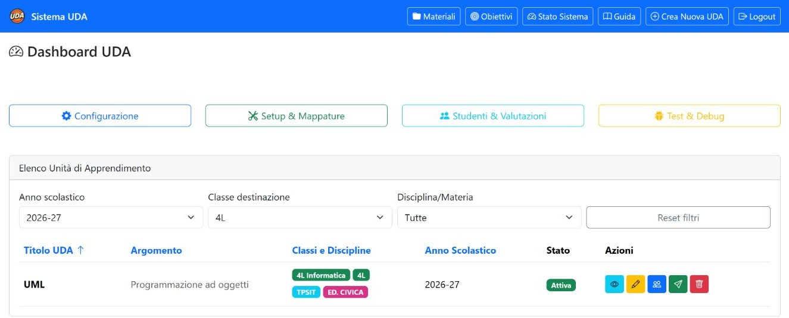

Capitolo 01 · orientamento
Home e ricerca dell’UDA
La home raccoglie le unità didattiche e permette di restringere l’elenco. Per seguire questa guida, individua la riga UML e apri la relativa scheda.

Filtrare e trovare UML
| Controllo | Effetto |
|---|---|
| Anno scolastico | Riduce l’elenco alle UDA dell’anno scelto. Per l’esempio, seleziona 2026–27. |
| Classe | Filtra in base al gruppo associato; scegli 4L per individuare la riga di riferimento. La scheda UML mostra anche il collegamento a 4L Informatica. |
| Materia | Mostra le UDA legate alla disciplina selezionata. |
| Reimposta filtri | Rimuove i criteri impostati e ripristina l’elenco. |
| Intestazioni tabella | Selezionando titolo, argomento, classe o anno si riordina l’elenco secondo quella colonna; lo stato è informativo e non è ordinabile. |
| Riquadri di riepilogo | Mostrano o nascondono le sezioni di navigazione corrispondenti; non filtrano l’elenco delle UDA. |
Azioni sulla riga UML
| Azione | Cosa fa |
|---|---|
| Visualizza | Apre la scheda dell’UDA con metadati, gruppi associati e collegamenti alle sezioni operative. È il punto consigliato per proseguire. |
| Modifica | Apre il modulo dei dati generali. Le modifiche diventano persistenti solo con Salva Modifiche. |
| Assegna classi | Apre la gestione dei gruppi destinatari. Verifica prima la scheda UDA per confermare i collegamenti già presenti. |
Nota sul filtro classe. L’elenco può presentare la UDA sotto il gruppo filtrato. Nella scheda collegata all’UDA risultano i due gruppi 4L e 4L Informatica; questa guida segue entrambi e non estende la consultazione ad altri gruppi.
Altri collegamenti della home
Materiali e Obiettivi portano agli archivi corrispondenti, da cui si può selezionare l’UDA UML. Guida apre il file iniziale di questo manuale. Crea Nuova UDA avvia un nuovo modulo: non serve per consultare quella già esistente.